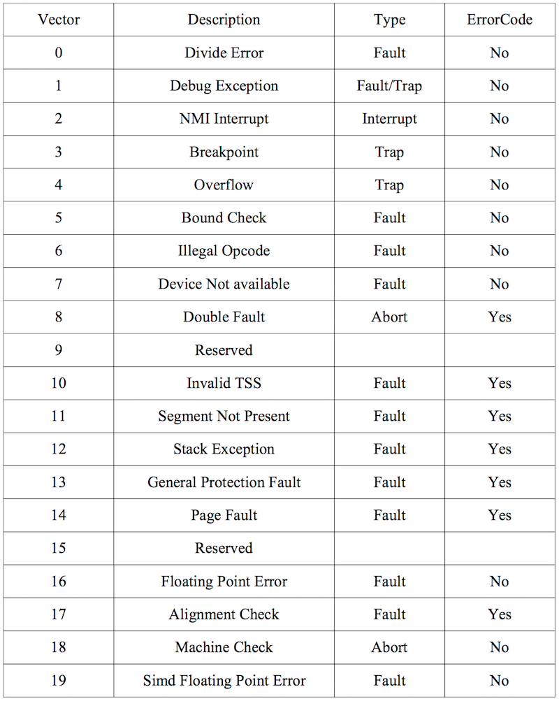

继续开始Lab3，用户环境。
序言
这个lab要实现基础内核功能来保证被保护的用户模式环境正常运行。要为JOS内核添加数据结构，记录用户环境，创建单用户环境，加载程序镜像并运行。要让JOS内核能够处理系统调用和各种异常。
注意：这里环境类似进程，用环境是为了与操作系统的进程做点区分，强调这是JOS的环境下。
Part A: 用户环境和异常处理
inc/env.h包含了用户环境的定义，内核使用 ENV 数据结构记录每个用户环境，这里用户环境有点像上下文，这个lab只要创建一个环境，但要设计JOS内核让其支持多环境。
在kern/env.c中定义了三个全局变量:
- struct Env *envs = NULL; // All environments
- struct Env *curenv = NULL; // The current env
- static struct Env *env_free_list; // Free environment list
JOS运行以后，envs指针指向一个存放系统中各种环境的Env结构体数组。JOS内核支持最大NENV(2^10,宏定义在inc/env.h中)个同时活动的环境。
JOS内核用env_free_list维护所有不活动的Env结构体，类似空闲链表。内核使用curenv来表示当前运行的环境，内核启动之前这个变量是NULL。
环境状态
Env结构体在inc/env.h中定义了:
1 2 3 4 5 6 7 8 9 10 11 12
| struct Env { struct Trapframe env_tf; // Saved registers struct Env *env_link; // Next free Env envid_t env_id; // Unique environment identifier envid_t env_parent_id; // env_id of this env's parent enum EnvType env_type; // Indicates special system environments unsigned env_status; // Status of the environment uint32_t env_runs; // Number of times environment has run // Address space pde_t *env_pgdir; // Kernel virtual address of page dir };
|
env_tf: 定义在inc/trap.h中，用来存放环境停止运行时寄存器的值。内核从用户模式切换为内核模式时也会保存寄存器的值，这样之后环境恢复的时候可以读取出来。
env_link：指向env_free_list中的下一个Env, env_free_list指向空闲env链表的第一个env环境。
env_id：当前Env环境的唯一id。即使用户环境终止，这个结构体被重新分配在同一块空间，这个id值还是不同的。
env_parent_id：内核储存env_id环境的父用户环境id。
env_type：用来区别特定环境。大部分情况是ENV_TYPE_USER。
env_status：这个变量保存了以下几种值
- ENV_FREE： 这个Env结构体不活跃，因此在
env_free_list中。
- ENV_RUNNABLE：这个结构体对应的环境等待被运行。
- ENV_RUNNING：这个结构体对应的环境正在运行。
- ENV_NOT_RUNNABLE：当前环境是活跃的但没准备运行。比如等待其他环境进行IPC(进程通信)。
- ENV_DYING：这是个僵尸环境，下一次陷入内核会被释放。
如同Unix进程，JOS环境结合了线程和地址空间。线程通常由被保存的寄存器定义，地址空间由env_pgdir指向的页目录和页表定义。想要运行环境必须给CPU设置合适的寄存器和地址空间。
分配环境数组
修改mem_init()去分配一个Env数组envs。
Exercise 1
分配一个envs数组，这个数组包含Env结构体的实例NENV。和pages数组一样，这个envs应该映射到用户只读的UENVS(定义在inc/memlayout.h)，这样用户进程可以读取。通过修改mem_init()，首先是初始化envs指针，
1 2 3 4
| // Make 'envs' point to an array of size 'NENV' of 'struct Env'. // LAB 3: Your code here. envs = (struct Env*)boot_alloc(NENV*sizeof(struct Env)); memset(envs, 0, NENV*sizeof(struct Env));
|
接着是准备映射，
1 2 3 4 5 6 7
| // Map the 'envs' array read-only by the user at linear address UENVS // (ie. perm = PTE_U | PTE_P). // Permissions: // - the new image at UENVS -- kernel R, user R // - envs itself -- kernel RW, user NONE // LAB 3: Your code here. boot_map_region(kern_pgdir, UENVS, PTSIZE, PADDR(envs), PTE_U);
|
通过make qemu-nox可看到check_kern_pgdir() succeeded!证明有用。
创建和运行环境
完善kern/env.c使之能够运行一个用户环境。因为还没做文件系统，所以设置内核去加载一个静态二进制镜像，JOS将这个作为ELF可执行镜像嵌入内核。
Lab3的GNUmakefile生成若干二进制镜像在obj/user/目录。
在kern/init.c中的i386_init()中，运行这些二进制镜像的代码都在一个环境中。
Exercise 2
完成 env.c的以下几个函数。
env_init()：初始化envs数组中的所有Env结构体并添加到env_free_list中，同时调用env_init_percpu，用来配置硬件不同段，特权级0是内核段，特权级3是用户段。
env_setup_vm()：分配一个页目录给新的环境并初始化新环境地址空间的内核部分。
region_alloc()：分配以及映射物理内存到一个环境。
load_icode()：分析ELF二进制镜像，将其加载到新环境的用户地址空间。
env_create()：使用env_alloc创建一个环境，调用load_icode加载ELF。
env_run()： 在用户模式下运行一个环境。
env_init
初始化envs数组，因为envs中的env_link指向的是下一个env，所以这里有个技巧是从envs的最后一个元素向前遍历。
1 2 3 4 5 6 7 8 9 10 11 12 13 14 15 16
| void env_init(void) { int i; env_free_list = NULL; for (i = NENV - 1; i >= 0; i--) { envs[i].env_id = 0; envs[i].env_status = ENV_FREE; envs[i].env_link = env_free_list; env_free_list = &envs[i]; } env_init_percpu(); }
|
env_setup_vm
设置e->env_pgdir并初始化页目录，可以使用kern_pgdir作为模板。填上这个，计数器加一，将p转化为内核虚拟地址，然后以kern_pgdir为模板复制。
1 2 3
| p->pp_ref++; e->env_pgdir = page2kva(p); memcpy(e->env_pgdir, kern_pgdir, PGSIZE);
|
region_alloc
分配len字节的物理内存给env环境，之后映射到环境中的虚拟地址va。要注意的是，va和len都要进行对齐。
1 2 3 4 5 6 7 8 9 10 11 12 13 14 15 16 17 18 19 20 21 22 23 24 25 26
| static void region_alloc(struct Env *e, void *va, size_t len) { struct PageInfo *p = NULL; va = ROUNDDOWN(va, PGSIZE); len = ROUNDUP(len, PGSIZE); for (; len; len-=PGSIZE, va+=PGSIZE) { if (!(p = page_alloc(ALLOC_ZERO))) panic("allocation failed."); pte_t *pte = pgdir_walk(e->env_pgdir, va, true); if (!pte) panic("Unable to alloc page."); int r = page_insert(e->env_pgdir, p, va, PTE_U | PTE_W); if (r != 0) panic("Page mapping failed."); } }
|
load_icode
加载可读的ELF二进制镜像到用户环境内存，起始虚拟地址在ELF程序头部应该有，同时将这些段清零，和boot loader类似，之后映射给程序初始栈的一个页。只加载ph->p_type == ELF_PROG_LOAD的段，每个段的虚拟地址应该在ph->p_va，它的大小应该是ph->p_memsz。binary + ph->p_offset之后的ph->p_filesz字节要拷贝到虚拟地址ph->p_va，其他剩余内存应该清零。这个挺难的，我参考了这个抢占式调度(lab3) 5.3.2.2。这里一定要注意lcr3()这个函数，通过lcr3指令把页目录表的起始地址存入CR3寄存器，这里的拷贝到指定的虚地址处，是指用户空间的虚地址，而不是内核空间的虚地址，所以还需要用lcr3函数加载用户空间的页表目录才能将地址转换为用户空间地址。参考bdhmwz的MIT 6.828 JOS/XV6 lab3–PARTA。因为这个问题折腾了半天括弧哭。
1 2 3 4 5 6 7 8 9 10 11 12 13 14 15 16 17 18 19 20 21 22 23 24 25 26 27 28
| static void load_icode(struct Env *e, uint8_t *binary) { // LAB 3: Your code here. struct Proghdr *ph, *eph; struct Elf *elf_head = (struct Elf *)binary; if (elf_head->e_magic != ELF_MAGIC) panic("ELF binary image error."); lcr3(PADDR(e->env_pgdir)); ph = (struct Proghdr*)((uint8_t*)(elf_head) + elf_head->e_phoff); eph = ph + elf_head->e_phnum; for(; ph < eph; ph++) { if (ph->p_type == ELF_PROG_LOAD) { region_alloc(e, (void *)ph->p_va, ph->p_memsz); memmove((void*)ph->p_va,binary+ph->p_offset,ph->p_filesz); memset((void*)(ph->p_va + ph->p_filesz),0,ph->p_memsz-ph->p_filesz); } } e->env_tf.tf_eip = elf_head->e_entry; lcr3(PADDR(kern_pgdir)); // Now map one page for the program's initial stack // at virtual address USTACKTOP - PGSIZE. // LAB 3: Your code here. region_alloc(e, (void *)(USTACKTOP - PGSIZE), PGSIZE); }
|
env_create
使用env_alloc创建一个env，调用load_icode来加载elf二进制镜像，设置env_type。这个env的父id应该设为0
1 2 3 4 5 6 7 8 9 10 11
| void env_create(uint8_t *binary, enum EnvType type) { // LAB 3: Your code here. struct Env *e; int r = env_alloc(&e, 0); if (r) panic("env_alloc failed"); load_icode(e, binary); e->env_type = type; }
|
env_run
切换上下文，首先判断当前环境是否为空，环境状态是不是ENV_RUNNING，之后将curenv指向新的环境，状态设为ENV_RUNNING，更新env_runs计数器，用lcr3切换到它的地址空间，使用env_pop_tf()储存环境计算器。
1 2 3 4 5 6 7 8 9 10 11 12 13 14
| void env_run(struct Env *e) { // LAB 3: Your code here. if (curenv != NULL && curenv->env_status == ENV_RUNNING) curenv->env_status = ENV_RUNNABLE; curenv = e; curenv->env_status = ENV_RUNNING; curenv->env_runs++; lcr3(PADDR(curenv->env_pgdir)); env_pop_tf(&(curenv->env_tf)); panic("env_run not yet implemented"); }
|
这时候make qemu-nox运行时会出现内存相关错误，暂时不需要担心。
来看一下程序启动的调用顺序图
- start (kern/entry.S)
- i386_init (kern/init.c)
- cons_init
- mem_init
- env_init
- trap_init (still incomplete at this point)
- env_create
- env_run
编译完内核并且运行在QEMU中，正常情况应该是系统进入用户空间，执行hello二进制程序直到系统int指令。然而因为JOS还没有设置硬件使用户过渡到内核，所以会出现问题。当CPU发现系统不能处理系统调用中断，会生成一个通用保护异常，进而又产生一个双重错误异常，同样因为解决不了，最终会导致三重错误(triple fault)。通常需要重启使CPU复位，这很麻烦，还好是在QEMU中，就会出现寄存器dump。
使用debugger去检查是否进入用户模式。使用make qemu-gdb然后在env_pop_tf处打断点。使用si单步调试，处理器执行iret指令之后的命令。
处理中断和异常
用户空间的系统调用指令 int $0x30 是终止：处理器进入用户模式但不能返回。所以要实现基础的异常和系统调用处理，这样内核就能从用户模式恢复控制权。
Exercise 3
看Chapter 9, Exceptions and Interrupts
保护性控制转移
异常和中断都是保护性控制转移，让处理器从用户模式切换到内核模式(CPL=0)，这样用户代码不会对内核或者其他环境造成影响。中断是由外部异步事件导致的处理器保护性控制转移，比如外设I/O的通知信号。异常是正在运行的代码同步事件导致的控制转移，比如除零或者访问无效内存。
为了确保控制转移真的被保护，x86平台上有两种机制：
中断描述符表。处理器确保中断和异常引起内核进入特定的入口点。
x86允许最多256个不同的中断和异常入口点，每个都有一个独特的中断向量。向量是0到255的数字，中断向量由中断源决定:不同设备，错误条件以及请求内核产生中断的不同向量。CPU使用向量作为索引访问处理器中断描述符表(IDT)，这个是内核在内核私有内存设置的。处理器从合适的入口处加载：
- 加载到EIP寄存器的值，这是个指向处理这种类型异常的内核代码的指针
- 加载到CS寄存器的值，包含特权级0-1
任务状态段。处理器需要存放中断异常发生之前的旧的处理器状态，比如原始EIP值和CS值，这样可以之后还原到之前的状态。保存这个的位置必须要受保护不能随意修改。
因此，x86处理器处理中断时会导致特权级由用户转为内核，也会将堆切换到内核内存中。任务状态段具体指明段选择子和堆栈的地址。处理器将SS, ESP, EFLAGS, CS, EIP和可选错误码压入堆栈中，之后从中断描述符中加载CS和EIP，设置ESP和SS指向新的堆栈。
异常和中断的类型
所用同步异常使用的中断向量在0到31，因此映射到IDT入口0-31。比如页错误导致的异常是向量14。大于31的中断向量通常是软件中断，是由int指令产生，或者外设产生硬件中断。
例子
举个例子，处理器执行代码遇到了除零问题。
- 处理器切换到TSS的SS0和ESP0字段定义的堆栈，JOS中这两个字段是 GD_KD 和 KSTACKTOP。
处理器将异常参数压入内核堆栈，放在KSTACKTOP：
1 2 3 4 5 6 7
| +--------------------+ KSTACKTOP | 0x00000 | old SS | " - 4 | old ESP | " - 8 | old EFLAGS | " - 12 | 0x00000 | old CS | " - 16 | old EIP | " - 20 <---- ESP +--------------------+
|
处理除法问题，其中断向量在x86上是0，处理器读取IDT的第0项，设置CS:EIP指向中断处理函数的地址。
- 处理函数负责处理异常，比如终止用户环境。
对于确定类型的x86异常，除了上面五个还有一个错误码。比如常见的页错误异常是数字14。80386手册上有详细定义的错误码。当处理器压入错误码，堆栈的样子是这样的:
1 2 3 4 5 6 7 8
| +--------------------+ KSTACKTOP | 0x00000 | old SS | " - 4 | old ESP | " - 8 | old EFLAGS | " - 12 | 0x00000 | old CS | " - 16 | old EIP | " - 20 | error code | " - 24 <---- ESP +--------------------+
|
异常中断嵌套
处理器在内核模式和用户模式都可以处理异常和中断。仅当从内核切换到用户时，x86处理器自动切换堆栈，将寄存器之前的值保存到堆栈上，然后触发异常处理。如果处理器已处于内核模式就触发了中断或异常(也就是CS寄存器低两位为0)，然后CPU压入内核堆栈更多值。这样就可以处理嵌套中断。如果处理器已经在内核模式且正在处理嵌套异常，就不会保存SS和ESP寄存器，所以内核堆栈就像这样：
1 2 3 4 5
| +--------------------+ <---- old ESP | old EFLAGS | " - 4 | 0x00000 | old CS | " - 8 | old EIP | " - 12 +--------------------+
|
如果处理器在内核模式处理异常，因为一些原因比如堆栈空间不足，不能将旧的状态信息压入堆栈，那么处理器之后就不能恢复，只能重启。当然，内核肯定被要设计成不能发生这种事情。
设置IDT
所以现在需要去设置IDT，这样JOS才能处理异常。现在只需要设置处理中断向量0-31(处理器异常)。
头文件 inc/trap.h和 kern/trap.h 包含了中断和异常的相关定义。后者包含了仅内核可访问的定义，前者是用户模式也能访问。
最终要实现这个样子:
1 2 3 4 5 6 7 8 9 10 11 12 13 14 15 16 17 18 19 20 21 22
| IDT trapentry.S trap.c +----------------+ | &handler1 |---------> handler1: trap (struct Trapframe *tf) | | // do stuff { | | call trap // handle the exception/interrupt | | // ... } +----------------+ | &handler2 |--------> handler2: | | // do stuff | | call trap | | // ... +----------------+ . . . +----------------+ | &handlerX |--------> handlerX: | | // do stuff | | call trap | | // ... +----------------+
|
每个异常或中断都应该在 trapentry.S 有自己的处理函数，trap_init() 用来初始化IDT。每个异常处理是一个保存在堆栈上的 struct Trapframe ，调用 trap() 指向这个 Trapframe。trap() 之后处理异常中断。
Exercise 4
实现上面说的异常处理，需要在 trapentry.S 给每个 trap 添加入口点。
_alltraps 应该是这个样子的：
- 值压入堆栈使其像一个 Trapframe 结构体
- 加载 GD_KD 到 %ds 和 %es
- pushl %esp 将指向 Trapframe 的指针作为 trap() 的参数
- 调用 trap
考虑使用 pushal 指令。最后使用 make grade 应该对于 divzero, softint, badsegment 这几个测试点正常通过。
参考80386 Programmer’s Manual 9.10 Error Code Summary

由上面的中断类型，确定哪些是不需要压入错误码
其中， trapentry.S 修改为
1 2 3 4 5 6 7 8 9 10 11 12 13 14 15 16 17 18 19 20 21 22 23 24 25 26 27 28 29 30 31 32 33 34 35 36 37 38 39 40
| /* * Lab 3: Your code here for generating entry points for the different traps. */ TRAPHANDLER_NOEC(t_divide, T_DIVIDE) // 0 TRAPHANDLER_NOEC(t_debug, T_DEBUG) // 1 TRAPHANDLER_NOEC(t_nmi, T_NMI) // 2 TRAPHANDLER_NOEC(t_brkpt, T_BRKPT) // 3 TRAPHANDLER_NOEC(t_oflow, T_OFLOW) // 4 TRAPHANDLER_NOEC(t_bound, T_BOUND) // 5 TRAPHANDLER_NOEC(t_illop, T_ILLOP) // 6 TRAPHANDLER_NOEC(t_device, T_DEVICE) // 7 TRAPHANDLER(t_dblflt, T_DBLFLT) // 8 // 9 TRAPHANDLER(t_tss, T_TSS) // 10 TRAPHANDLER(t_segnp, T_SEGNP) // 11 TRAPHANDLER(t_stack, T_STACK) // 12 TRAPHANDLER(t_gpflt, T_GPFLT) // 13 TRAPHANDLER(t_pgflt, T_PGFLT) // 14 // 15 TRAPHANDLER_NOEC(t_fperr, T_FPERR) // 16 TRAPHANDLER(t_align, T_ALIGN) // 17 TRAPHANDLER_NOEC(t_mchk, T_MCHK) // 18 TRAPHANDLER_NOEC(t_simderr, T_SIMDERR) // 19 TRAPHANDLER_NOEC(t_syscall, T_SYSCALL) /* * Lab 3: Your code here for _alltraps */ _alltraps: pushl %ds pushl %es pushal movw $GD_KD, %eax movw %ax, %ds movw %ax, %es pushl %esp call trap
|
trap.c 中首先完成 trap_init()
1 2 3 4 5 6 7 8 9 10 11 12 13 14 15 16 17 18 19 20 21 22 23 24 25 26 27 28 29 30 31 32 33 34 35 36 37 38 39 40 41 42 43 44 45 46 47
| void trap_init(void) { extern struct Segdesc gdt[]; // LAB 3: Your code here. void t_divide(); void t_debug(); void t_nmi(); void t_brkpt(); void t_oflow(); void t_bound(); void t_illop(); void t_device(); void t_dblflt(); void t_tss(); void t_segnp(); void t_stack(); void t_gpflt(); void t_pgflt(); void t_fperr(); void t_align(); void t_mchk(); void t_simderr(); void t_syscall(); SETGATE(idt[T_DIVIDE], 0, GD_KT, t_divide, 0); SETGATE(idt[T_DEBUG], 0, GD_KT, t_debug, 0); SETGATE(idt[T_NMI], 0, GD_KT, t_nmi, 0); SETGATE(idt[T_BRKPT], 0, GD_KT, t_brkpt, 3); SETGATE(idt[T_OFLOW], 0, GD_KT, t_oflow, 0); SETGATE(idt[T_BOUND], 0, GD_KT, t_bound, 0); SETGATE(idt[T_ILLOP], 0, GD_KT, t_illop, 0); SETGATE(idt[T_DEVICE], 0, GD_KT, t_device, 0); SETGATE(idt[T_DBLFLT], 0, GD_KT, t_dblflt, 0); SETGATE(idt[T_TSS], 0, GD_KT, t_tss, 0); SETGATE(idt[T_SEGNP], 0, GD_KT, t_segnp, 0); SETGATE(idt[T_STACK], 0, GD_KT, t_stack, 0); SETGATE(idt[T_GPFLT], 0, GD_KT, t_gpflt, 0); SETGATE(idt[T_PGFLT], 0, GD_KT, t_pgflt, 0); SETGATE(idt[T_FPERR], 0, GD_KT, t_fperr, 0); SETGATE(idt[T_ALIGN], 0, GD_KT, t_align, 0); SETGATE(idt[T_MCHK], 0, GD_KT, t_mchk, 0); SETGATE(idt[T_SIMDERR], 0, GD_KT, t_simderr, 0); SETGATE(idt[T_SYSCALL], 0, GD_KT, t_syscall, 3); // Per-CPU setup trap_init_percpu(); }
|
Part B: 页错误，断点异常和系统调用
处理页错误